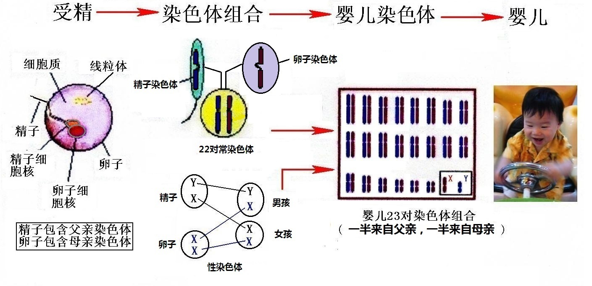
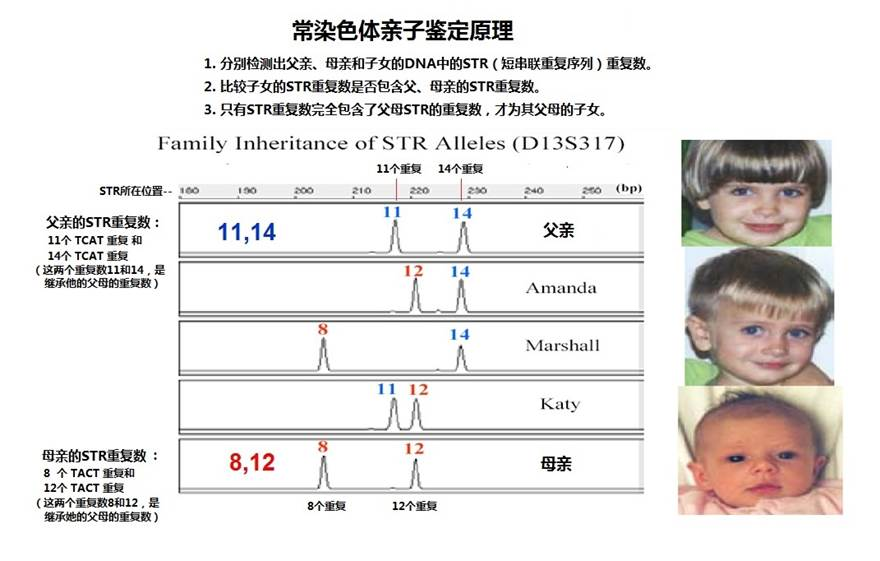
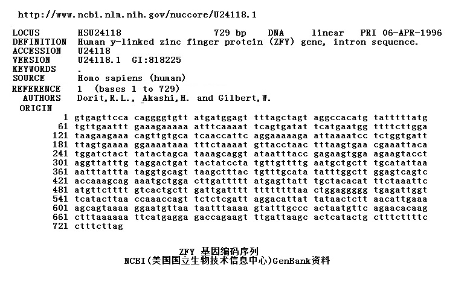
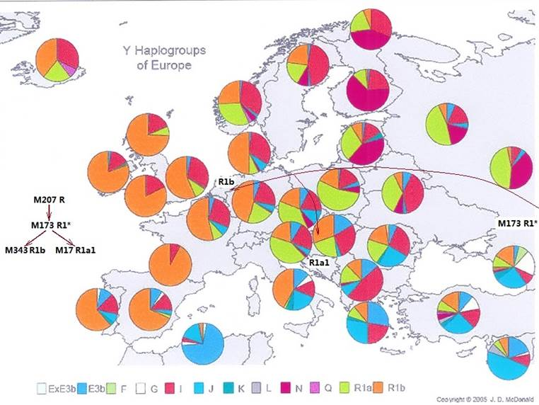

|
回主页
第二节 寻找科学亚当和科学夏娃
第1小节 寻找Y染色体亚当
一、 血液中的密码
很久前，人们已经认识到父母和子女之间有遗传关系，并试图从血里面寻求这种关系的秘密。中国传统戏《三滴血》里面就有一个这样的故事：两百多年前，中国的一个县长，企图以“父子滴血入水”的方式，来鉴别亲子关系，结果导致父亲和他亲生儿子被活活拆散，这显然是一个失败的案例。 上一世纪初，奥地利的卡尔医生发现了人类的血型有A、B、O、AB四种，并确定了血型遗传规律，这是首次以科学的手段确认了血液中包含的遗传关系。科学家们发现了DNA以后，人类对自身遗传秘密的了解，又跨进了一大步，一个基于DNA的亲子鉴定方法开始被确立起来。
1. 从亲子鉴定方法谈起

图2-1父母与孩子DNA的关系
父母与孩子DNA的关系:人体各部位的细胞都含有相同的DNA，它们是遗传信息的载体，遗传信息的载体是DNA (去氧核糖核酸)。人類的DNA絕大多數位於細胞核內，細胞核內的遗传信息包含在染色体中。孩子的22对(每对两條)常染色体一条来自父亲、一条来自母亲。另外，还有一对性染色体：如果是女孩，她的一对性染色体是XX，分别来自父亲和母亲；如果是男孩，他的一对性染色体是YX，Y染色体来自父亲、X染色体来自母亲。人类的遗传信息非常奇妙：常染色体将父母双方的遗传信息平衡地向下一代传递；而父亲的Y染色体只向男孩传递，不会传给女孩；有趣的是，母亲的线粒体则传给女孩，女孩可以向下一代传递。也传给男孩，但是他没有向下一代遗传的资格。
目前，有三种亲子鉴定方法：
常染色体亲子鉴定:
由于常染色体一半来自父亲、一半来自母亲，在常染色体亲子鉴定中，可以确定孩子的亲生父母。
Y染色体亲子鉴定: Y染色体亲子鉴定中，只可以作父系亲子关系的确定。不过Y染色体的鉴定不但可以鉴定父子关系，还可以鉴定上下十几代的父系关系。那么，能不能鉴定出更远的父系关系呢？在十几年前已经给出答案：可以.
线粒体亲子鉴定:
在细胞核之外的细胞质中，存在着线粒体DNA(也叫mtDNA)，这是母系遗传的标记，可以在母女间代代相传。在它的传承中，也有微小的变化，因此可以作为母系亲子关系的鉴定，同样也可以鉴定上下十几代或更远的母系关系。
2．DNA中的信息是什么样的？
1953年，美国生物学家詹姆斯·沃森（James Watson）和英国生物学家弗朗西斯．克里克（Francis Crick）发现了DNA双螺旋的结构，打开了“生命之谜”，使遗传的研究深入到分子层次，开劈了由人们自身中的DNA，去寻找遗传信息实质和传递秘密的方向，它也是建立分子人类学的基础。如同血型可以用A、B、O、AB来表示那样，DNA同样也可以用字符代码来表达。

图2-2 DNA的立体构造
DNA 遗传信息的传递，是由排列在DNA上的四种碱基来负责的，代表四种碱基的是四个字符代码A、T、C、G。Ａ－Ｔ、Ｇ－Ｃ，两两成对（Ａ和Ｔ可或前或后，Ｇ和Ｃ也同），构成螺旋。每一条染色体，都包含一条长长的螺旋。通过复杂的DNA序列的解析过程，可以从人类DNA样本中解析出各DNA片段字符代码序列。在遗传方面，就是DNA中这4个字符代码的排列，决定着人们的黑白、胖瘦、高低以至面貌、健康等等。每个细胞中包含大约60亿这样的字符代码，30亿来自父亲、30亿来自母亲，要完全弄清楚它们，可真要花上一些时间。
亲子鉴定就是依据这些字符代码的比较来进行的。孩子的每对(两条)常染色体一条来自父亲、一条来自母亲，因此，可以通过比较父、母和子女在常染色体特定位点上DNA字符代码的序列，来判定亲子关系。

图2-3 常染色体亲子鉴定原理
例如，孩子在染色体某个位点上的一串DNA字符代码是“TCAT TCAT TCAT TCAT
TCAT TCAT TCAT TCAT”，这8个“TCAT”的重复，可以看成是一个“遗传标记”。他的母亲或父亲的DNA，在此位点上一定有这样的8个“TCAT”重复，也就是说要有这个“遗传标记”。同样，比较其它染色体上十几个位点的DNA字符代码串，就能确定出谁是、谁不是孩子的父母。
这种DNA字符代码的重复称为“短串联重复序列”，英文是“Short
tandem repeats”，简称为STR，是鉴定几千年内遗传关系的特征标记。
二．“Y染色体亚当”的发现
Y染色体只传子、不传女，而且代代相传。Y染色体可以分成很多区，如果两人某一区的ＤＮＡ字符代码序列完全相同，那么他们就一定有相同的父系。
1995年，道瑞特、阿卡西和吉尔波特三位科学家在美国权威科学期刊《
科学》上发表了一篇《 人类Y染色体在ZFY 区上不存在多态性》的论文[注释1].，他们测定了分处世界各国各地，共38 名男性Y染色体的ZFY基因区的DNA，结果令他们大吃一惊的是：他们检测了ZFY基因区包含的729个DNA字符代码序列，这38人的此片段DNA序列竟然完全相同。难道这38 名没有任何亲戚关系的男人，都是一位风流好色的男人在世界各地所留下的后裔吗？这显然是不可能的。根据这一结果，他们断言目前的人类有一位共同的男性祖先，估算大约生活在27万年（当初的估计）前。这样，继1987年“线粒体夏娃”这位人类共同的“老奶奶”祖宗被发现之后，“Y染色体亚当”━这位人类共同的“老爷爷”祖宗，也终于首次从历史的迷雾当中，露出了他的面目。ZFY基因区字符代码的序列图：

图2-4 ZFY 基因的编码序列（亚当标记）
而后，在1997年10月31日出版的美国“科学”杂志上，刊登了另一篇题为“Y染色体显示亚当是一位非洲人”的论文[注释2]。这位人类共同的“老老祖父”，被正式命名为“Y染色体亚当”。而这个位于Y染色体ZFY基因区内的729个DNA字符代码序列的“遗传标记”，就成了“亚当标记”。这个标记也是Y染色体中最长的特别标记。真是奇妙无比！居然在人的身上，存有这样的密码标记。以后的研究中，证实全世界猴子、猩猩身上或者古代的类人猿尸体中，都没有和这个序列相同的的标记。这真是一个特殊亲子鉴定的结果。
至于我们这位“老老祖父”到底长得啥模样？斯宾塞.韦尔斯(Spencer
Wells)，这位分子人类学家是这样描述的： "从上面的线索中，我们先祖的形象慢慢地浮现出来：他黑肤色（很可能比现在非洲人的肤色要浅），削瘦、适中的身材，如果他穿着西装，在火车上坐在你对面的话，你是不会认出他的。"[注释3]
三． 功不可没的研究团队
在美国旧金山，沿101号公路南下，25分钟后，就会遇见与哈佛大学齐名，世界首屈一指的美国斯坦福大学。和本文有关的“Y染色体研究”，始于1995年。除斯坦福大学本身的学者外，还有来自哈佛、耶鲁、牛津等其他多国名校的学者们。2000年11月，《自然遗传学》杂志发表了他们的研究报告，文章有多达21位的共同研究者署名。此项研究花费了几千万美元，他们甚至整整18 个月里没有周末。其成果没有辜负他们五年多辛勤的努力，这篇引起很大震撼的文章标题是“Y染色体序列变异和人类群体的历史” [注释4]。它也包含了来自中国学者们的辛勤劳动和功劳。后来成为复旦大学的副校长和专业带头人的金力教授，就是作者群中的一位。前面提到的斯宾塞.
韦尔斯，1997年还是斯坦福大学的博士后，2001年以后，就担当起美国国家地理学会发起的、由许多国家参加的"基因地理"研究项目重任。他为了发动采集现代人的DNA样本，到过世界各地。他们的研究，不但证明了亚当理论，而且给出了亚当以下直到我们的父系族谱，还论证出了我们祖先的迁移路线。
四． 血液中的族谱
每个成年人体大约由40到60万亿个细胞组成，每一个人身体中的每一个正常细胞，无论是血液、肌肉或是口粘膜中的细胞，其中的DNA都是相同的(除了生殖细胞的精子、卵子)。在男性细胞核的Y染色体中，大约有五千多万对字符代码构成。这一肉眼不能看见的小小Y染色体，却可以记录相当于几千万字内容的信息。
1. 人类父系族谱的忠实记录文件－－“Y染色体的非重组区”
随着Y染色体亚当的发现，人们更加关注Y染色体。研究发现在Y染色体中，有95%的区域为非重组区，意思就是说：在这个区段内的DNA碱基字符代码信息，在通常情況下，不随每代(请注意这个"每代")的遗传发生变化，故此，它们得名为“Y染色体非重组区”。在分子人类学的研究中，又将这个区域进一步地被划分成很多个更小的“字符代码特区”。仔细研究这些小区域上的字符代码，发现区域上的DNA碱基字符代码，在通常情况下，都会完全复制到儿子的身上。但经过上十代的遗传，也会有一个字符代码或一段字符代码，发生突变（如T变为C，或丢失了几个字符代码）。这种复制和突变，正好反映了继承和变化，成为Y染色体记录人类父系图谱的基础。
您可以把“Y染色体的非重组区”的记录信息看作商品的“条型码”，就是在付款时一扫便知道价钱的数码条，在条形码上包含有产品生产国家、厂家以及产品信息。每个男性的身上，都有着这样的“DNA条型码”，而且可以向下一代复制。经过若干代的遗传，某一个儿子会产生新的突变标记，等于在这个条型码的尾端又加了一个数码。这个“特别的儿子”Y染色体上，既有父亲的标记，也有自己的新标记。因此“遗传标记”会随着遗传，一代代传下去，成为某一个族裔所拥有的特殊标记。越到下面的后代，发生过的突变会越多，承传的“遗传标记”也就越多、标记也越细致，就像条型码越来越长。
“遗传标记”的承传，使我们能追寻我们的先祖；突变产生新的“遗传标记”又能区分不同的族群。因此，我们说“Y染色体的非重组区”，是人类父系族谱最忠实无误的记录文件。正是这些标记，忠实地记录了我们每一个人，
由“Y染色体亚当”至今，绵延几千代的父系遗传历史。
很难想象，竟然有一个这么详细的“产品说明书”，在出生时，已经附加在我们的血液之中。
2. 血液中的族谱
换句话说，我们每一个男人的细胞中，都有一本我们肉眼看不见的父系“族谱”。分子人类学家们将其形象地称之为“生物化石”。这是一个令人无法想象，却奇妙无比的客观事实。令人惊讶的是在出生之时，一个身份档案记录，同时已经放入到人们的身体中了。从这个角度来看，我们何须到处去发掘化石？我们何须去寻找我们的族谱？它就“写”在你、我身体的每一个细胞中。这并不是“天方夜谭”，我们不都相信了DNA的亲子鉴定吗？如果您的Y染色体经鉴定和您的父亲一样，您会怀疑他不是您的父亲吗？既然可以用DNA鉴定我们的父亲、祖父、曾祖父，儿子、孙子和重孙子，当然可以用DNA寻找我们更古老的祖先，亚当理论就是这个鉴定的结论。
Y染色体所记录的“族谱”，可以这样比喻：遗传标记可以看作是条形码中的数码，每一个标记对应一位数码。这条形码的第一个码，就是“亚当标记”，下面的各码，则是从亚当至今历代各祖先的记录。那最后的一个码，就代表了你近几十代的父系血亲。DNA检测的技术越来越先进，Y染色体父系树谱的资料越来越丰富，未来只要用特别的DNA检测机器将你血液中的“DNA条形码”一扫描，就能知道你生命的来源。
五、 我们体内的标记
我们血液中的父系族谱是用Y染色体中的“遗传标记”记录的。除了全世界现代男人共有的“ZFY”标记是DNA“固有标记”之外，很多遗传标记都是在遗传中由突变形成的。
分子人类学研究的主要标记有两类：一类是在前面亲子鉴定内容中的“短串联重复序列”(STR)，它多用于几千年以内的父系鉴定；另一类是同一位点DNA字符代码在不同人群中，因突变发生的DNA多态性（SNP--Single Nucleotide Polymorphism）。例如在Y染色体DNA序列的G3.27a区中第73点上，中国汉族人的祖先，在此位点上，因为突变，碱基字符代码T变成了C，以后所有他的子孙（汉族人）都有了这个标记，而中国傣族人在此位点上依然是T。不同族群在DNA同一位点上，有不同的字符代码，或者有字符代码的缺失、或者插入，就是DNA的多态性(SNP)。染色体的SNP突变，因为突变率极低，极少会在同一点上发生重复突变，因此可以做到在后代中永久地保留。后代只能在祖先的突变基础上积累新的突变，而不会丢失祖先的突变特征，因此依据SNP标记能追踪万年以上的祖先。
血液中的父系族谱是用Y染色体中的“突变遗传标记”记录的。突变遗传标记是什么样的呢？突变遗传标记就是反映多态性（SNP）的DNA字符序列 。斯坦福大学的国际研究团队，2000年公布了在“Y染色体的非重组区”发现的167个标记的DNA字符序列[注释5]，并分别给于它们不同的命名：如M168、M173、M343、M175等。从此，由DNA去发现人类历史轨迹的理论，才走出分子生物学家的神秘殿堂，成为每一个人都能查找和验证自己父系历史的资料库。
自2000年以后的十几年来，全世界已经检测了上百万人的Y染色体DNA样本，突变遗传标记已经增加到了1千4百多个[注释6]，因此能更细致地按标记区分不同的族群，将全世界的人划分为一个个更小的单倍群（Haplogroups） 。单倍群是指有同样遗传标记的人群，同一个Y染色体单倍群的人群，一定有一位共同的父系祖先[注释7]。先前的167个突变遗传标记也全部证明没有错误。因此，实现了仅仅用一滴血就可以追寻到您千代以前的祖先，直到Y染色体亚当。以全世界人体内的这些突变遗传标记为主导，就可以勾绘出一部人类的父系族谱和相应的迁徙史。
这里是一个“遗传标记” 产生的实例：大约在3万多年前，当人类由非洲向北迁徙到中亚的某个地区，一个受精卵细胞发育成一个男性胚胎细胞时，在他Y染色体中，Y-position
NCBI36：编号13535818的位点(The
National Center for Biotechnology Information -NCBI)，原来的DNA字符‘A’，瞬间地改成了‘C’ ，这就是常说的“突变”。于是，这个被定名为M173的新遗传标记从此诞生了。“Y染色体命名协会”（The Y Chromosome Consortium --YCC），将这个新的M173以下，所有后裔族群的标记类型，定为R1型单倍群，这个名字当然更容易记忆。所有R1型族群子孙都携带了这个独特的“DNA烙印”。他们是谁呢？他们就是大部分中欧和西欧现代人的祖先。他们有一个共同的父系祖先M173男子。因为就像能测出人的血型那样，不少研究机构都可以测定出这个DNA标记，只需要一星点血液或口粘膜。在以后几十万人的DNA样本检测中，证实这个结论是正确的。目前还没有发现有其他的种族，（例如非洲有M61标记的原住民，亚洲有M175标记的原住民，在Y染色体相同的位点上，）有这个突变。
也就是说，这个位置上的突变是唯一的，没有重复的，也没有发现在这个位置上的反向再突变。可以这样说，全世界的人，无论你生活在什么地方，只要检测出你的Y染色体DAN在这个位置上是‘C’，你就必然是M173的子孙，是属于R1型单倍群，否则，你就不属于这个单倍群的族群。M173标记仅仅是5千多万对字符的Y染色体中的一个字符，就像一个大沙堆中的一粒沙子，但在人类遗传中，在胚胎产生和细胞分裂中，经过多少亿次的复制，这个字符居然能在同一个位置上，屹立不变的保留下来，实在令人惊叹。也从这里看到，Y染色体没有发生进化的事实，这个事实，正是分子人类学能够建立的基础。

图2-5 M173的后裔分布图
让我们继续展开我们的故事。不知在什么原因的带领下，M173的子孙们坚定地向西走去，进入了现代欧洲的中部。大约又过了上万年的时间，在他后代里面的一个男孩，在他胚胎发育的过程当中，Y-position NCBI36：编号2947824的位点，原来的DNA字符‘C’，瞬间地改成了‘A’ ，这又是一个新的“突变”。于是，一个新的DNA遗传标记又出世了，分子生物学家们，给这个标记的定名是“M343”，YCC给这个标记命名为R1b 。现在这个男孩身上比他的有M173标记的父亲又多了这个M343（M173+M343）。这个M343标记就是著名的、涵盖欧洲西部最多人口族群的（例如撒克逊人）DNA标记，他是现代英国、法国、西班牙、葡萄牙和德国多数族裔人群的标记。很可能，那些在法国南部洞穴中，给我们留下了美妙壁画的克罗马努人，就是这个M343男孩的早期子孙。
这里我们应该注意到，突变遗传标记只能在人类受精卵形成胚胎的过程中发生，它也只能通过生殖向下一代遗传中传递。它既不能由外面输入，也不能在成人后发生改变。因此，首先携带某个标记的人，只能是唯一的一个男人，不能是一群男人。而结论也只能是：西欧的多数人群，都是那个“M343”男人的后代子孙，能够确认族群身份的证据，是他们一定有着“M173+M343”Y染色体DNA标记。
当时，在欧洲中部生活的另一部分M173的子孙，他们不是M343男子的后代，依然在生活和繁衍中。大约在一万多年前，M173的后裔中，又出现了一个新标记的男子--M17。这个标记在Y-position
NCBI36：编号20192556的位点，原来位点上的一个DNA字符“G”，在一个男孩产生时，在他的细胞中消失了。这个标记下的单倍群被命名为R1a1，可以与那些早已西迁的堂兄弟们加以区别，他们广泛地分布在中欧和东欧地区。近十几年来，分子人类学家在欧洲各国采集了不少人的DNA样本，谁到底属于什么种族的疑惑，也就迎刃而解了。
和欧洲类似，大约在4万年前，在亚洲的南部，一位男孩诞生时，在Y-position NCBI36：从14018100到14018104位点上的5个字符"TTCTC"缺失了，这个标记被命名为M175，将这个新的M175以下，所有后裔族群的标记类型，定为O型（英文字母O）。科学家们估计大约在3万年前，M175的子孙，进入目前的中国境内。然后，随着时间的渐渐推移，在他后代里面的一个男孩，在他胚胎发育的过程当中，在Y-position NCBI36：编号20192556的位点上，原来的字符“T”， 突然地改成了“C” 。于是，一个新的DNA遗传标记又出世了，斯坦福大学的分子人类学家们，给这个标记的定名是“M122”，他的后裔定名单倍群为O3 。这个M122标记就是著名的、涵盖最多人口的族群--汉族的标记。
六．我们的父系族谱
根据近期的研究成果，绘制了新的Y染色体父系图。

图2-6 人类的父系树图谱（本图年代尺标仅作参考）
例如：从欧洲人单倍群R1向上看是M173标记，再向上看是M207，M45，M9，然后是M89、M143、M168、M139、M94、M42，直到我们的老老祖父“Y染色体亚当”。世界各民族的父系系列各不相同，但最上端都汇总到“Y染色体亚当”一点上。
注释：
1．Dorit RL, Akashi H, Gilbert W. “Absence of
polymorphism at the ZFY
locus
on the human Y chromosome.”Science 268:1183–1185 1955。
2．Ann Gibbons,“Y
Chromosome Shows That Adam Was an African” Science
31 October 1997.
3．Spencer Wells,“The
Journey of Man: A Genetic Odyssey”book， Part 3” Eve’s
Mate；（中文名称：出非洲记，人类祖先的迁徙史诗，斯宾塞.韦尔斯）.
4．Underhill PA, et al.
“Y chromosome sequence variation and the history of human populations”,Nature America Inc.2000.
5.“Sequence information for the 167 Y chromosome markers
described ”，Stanford University。
6.See
“Y-DNA SNP
Index – 2011”，The
International Society of Genetic Genealogy (ISOGG) ,
http://www.isogg.org/tree/ISOGG_YDNA_SNP_Index11.html
7. Haplogroup ：Haplogroup
is a group of populations that share a common
ancestor having the same single nucleotide polymorphism (SNP) mutation .
|